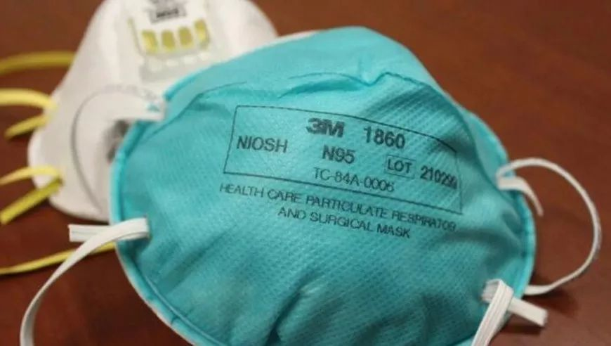
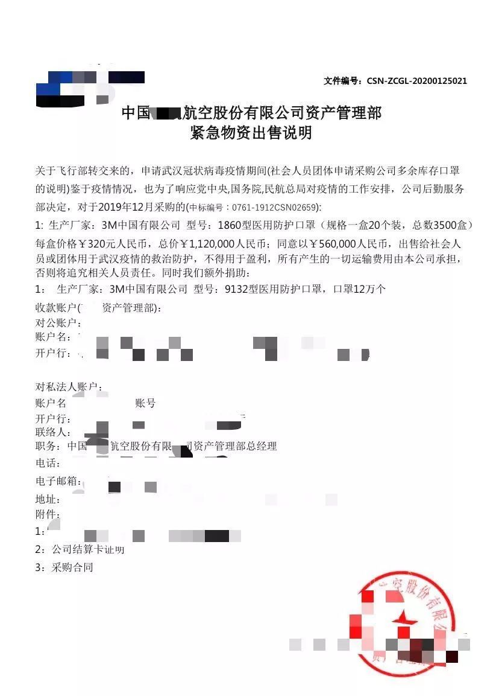
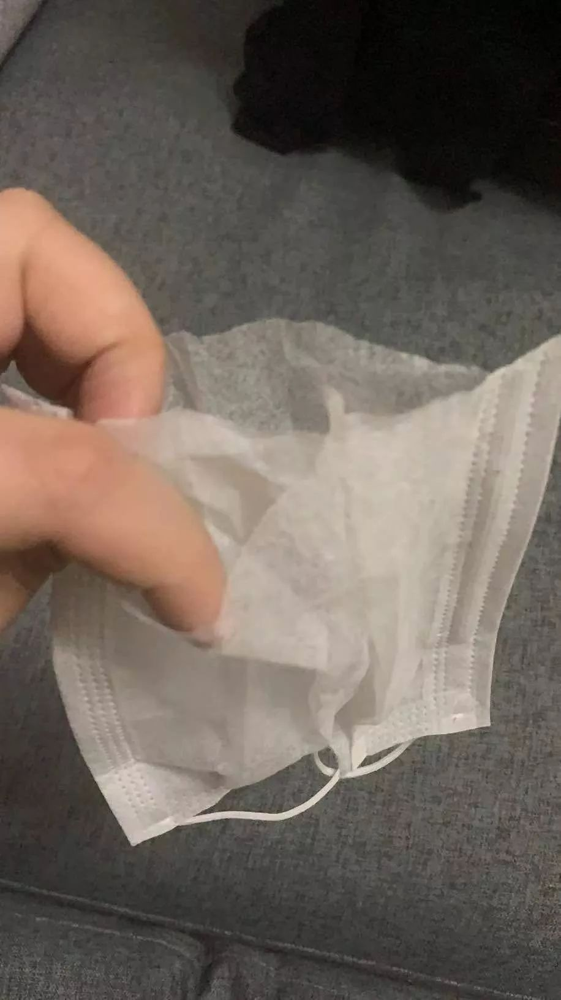

湖北基层医院采购医生：封城后，到高速服务区“抢”口罩
原文链接 备份链接 *************▲*************1月30日，海军军医大学医疗队三病区医护人员正在穿戴防护用具。（新华社 陈晨/图） 全文共*3590*字，阅读大约需要7分钟。 钟南山表态的前两天，政府部门连夜召 …


来源：腾讯新闻《潜望》 栏目
作者：张珺
从北上广深等城市筹集善款到口罩、防护服发放到医生护士手中，需要经历多少难关？
1月初开始新型冠状病毒席卷中国，商业公司、基金会、普通民众、海外华侨留学生，捐赠速度空前。包括企业募捐、公益基金向社会公开筹款，这笔善款金额起码有数十亿之多。另外一方面，来自湖北武汉医院的声音却不断提醒我们：物资短缺。来自武汉医院的视频显示，多个医院的医生为了节省一次性的防护服一天不喝水，口罩也一直处于短缺状态，甚至除夕夜医生和护士的午餐是简单的方便面和饼干。
一面是声势浩大的驰援行动，一面是武汉乃至湖北地区的医疗物资告急，这样的反差来源于何处？不少接受采访的人士都表示，现在不愁钱，但拿到物资、把物资送到前方充满曲折。

深夜，我发现遇到了骗子
“骗子甚至比我们还专业，盖章、签字一应俱全。”一位公益基金会秘书长说。他在2020年1月26日晚9点半抽出空隙接受了我们的采访，电话中一直气喘吁吁。此时新型冠状病毒舆论发酵5日，公益组织员工几乎忙得连轴转。
“春晚那天晚上捐款最疯狂，各个频道募捐额都在指数级上涨。”一位在线募捐平台项目负责人说，近几日仅网上募捐额就至少达到10亿规模，历史罕见。而来自企业方的公开捐助，单以互联网公司为例，超过25亿元。“你看才短短几天时间，是相当恐怖的。”
他们平台直到凌晨两三点每秒钟还有几十个用户在捐款。据他介绍，互联网慈善募捐2018年全年的募捐总额在32亿左右；而一般性自然灾害的募捐额为数百到数千万；对比之下，这次善款规模庞大，并且仍在增加，不少人在平台上问，这个项目捐满了，还有没有其他项目能捐。
一边是迫切的捐助者，而另一边，募捐平台在筹集完资金后，资金直接流向各个基金会，由基金会做执行。基金会的首要任务是，最大化利用这笔钱采购物资，运输到疫区前方。其中，采购和运输是关键点。现在不缺钱，真正稀缺的是物资。“采购就是八仙过海，各显神通了。”上述人士称。
这位公益基金会秘书长在微信里置顶了15个物料采购供应商群，接连3日都在疯抢货源、价格轰炸中度过。挂完电话，他的手机又显示几百条未读提醒，每天到忙到凌晨两点之后。就在全民皆兵的关头，他没有想到，自己差点被骗走56万元。
行骗路径看起来猖狂。1月25日，有人以某航空公司资产管理部的名义，接触这家基金会，并称自己有一批近20万只N95口罩的储存物资——其中12万只愿意捐赠，7万只需要购买，不过表明是中标价格的“半价出售”。对方提供了一系列看起来正规的航空公司文件。

行骗者提供的物资出售说明，供图/接受采访的公益基金
一份名为《XX航空股份有限公司资产管理部紧急物资出售说明》的文件显示，这些口罩是由飞机部转交，用于申请武汉冠状病毒疫情期间，社会人员团体申请采购公司多余库存口罩。口罩系3M的医用防护口罩，文件配有中标时间和编号，以及航空公司印章。
“他们中标采购的标书上是16块，半价相当于8块钱。”上述秘书长说。采购这批货总价56万。“我们下意识认为航空公司储备的物资一定是符合标准的。”更令基金会心动的是，对方承诺将由航空公司直接空运这批口罩到达武汉。
“不得用于盈利，所有产生的一切运输费用由本公司承担 。”他们在文件中信誓旦旦写道。

行骗者提供的物资出售合同，供图/接受采访的公益基金
事后来看，文件有几处破绽。第一，他们提供的合同抬头，把航空公司名称写错了一个字；第二，在合同正文中，他们把甲乙方多次错用；第三，对方留下的邮箱经测试不能接收邮件。
为了加强信任度，行骗者特意在提供的物资出售说明下方，印有“抄送：XX董事长、XX总经理、XX总会计师、行政管理部、董事会办公室”字样，这些人都是该航空公司高层真实姓名。一般而言，抄送只会出现在邮件而非正文中，这么做有几分掩耳盗铃，但是在分秒必争的疫区支援背景下，组织者来不及多想。
“你只要交十几万定金就可以把货全拿走，他们是通过空运直接到武汉，那多好啊！我们就赶快谈啊。”秘书长表现急切。
直到签合同的最后一刻，这家基金会的法务发现，收款人不是航空公司。他们按公司名查询，这家公司已于2019年中注销。这时基金会负责人才提起警惕。他又从其他途径得知，这个团队还在向其他公益组织同时开价，并让他们缴纳定金。
据这位秘书长了解，这些骗子最早盯准留学生群体，因为留学生在支援前线中表现踊跃，但后来可能消耗不了供给，他们又盯上了基金会。目前该基金会已经报案。
截至25日晚，基金会就等发货消息对外发布通稿，没想到出了意外。“没办法，在深夜之前我都没有办法确认他是骗子。”上述秘书长称，“抬价我都能忍受，顶多我不选择，但是摆明上来骗的就太恶劣了。”他希望这起事件能引起其他公益组织及人士注意。不能用众人的善意助长了坏人的气焰。

一觉醒来，20万口罩没有了
罗然（化名）在公益基金任职，这天他刚谈定20万只口罩，已经打款。凌晨2点睡下，他总觉得不踏实，夜里4点醒来打开手机，不料工厂临时发微信通知：“口罩被相关部门扣下了，不让出售了。”仅仅两个小时，一大批物资泡汤。
这批口罩均为一次性医用口罩，每个1元，目前该型号口罩正常的价格浮动在6毛到1块5之间。他怀疑这批物资是抬价卖给了别人，但不能确定。“动不动几万个被别人截走了，有一些甚至付了钱的。”一位参与驰援的民间组织发起人说，他们刚从一家台州厂商预订了上万个口罩，结果临时通知没有了。
采购越来越难是大家共同感受到的。“我们一路搜集的过程中，价格越来越高，已经到了百分之一两百的涨幅了。”一家创业公司CEO佘锡伟说，他们从过年前两天开始动员公司力量搜寻物资，其中有一家谈好的N95级别口罩，预定采购价是5块，然后在半个小时后就变成13块。该类型口罩他们的采购价格在5元至15元之间，他们采购了20万以上口罩。
据罗然介绍，现在买到的基本是N95级别口罩，距真正的医用标准有一定差距，纯医用口罩由于根本找不到货源他们已经接近放弃了，只能寄希望于政府机构统一调配。N95级别口罩一般的采购价是7-8元，波动高点为11-12元，现在达到16元也算是合理范围。但是有人把该型号口罩加价卖到25-35元。“加价挺夸张的，我都不敢跟你说。”而一次性医用口罩正常价格为7-8毛，现在贵的卖到了每个2.5元。
上述公益基金秘书长称，目前市面上不存在太多讨价还价，基本都是一口价，商家根本不愁卖，只要有货，“瞬间秒没”。以往公益基金做项目，只要制定好计划，提前告诉供应商需要多少就行了，而这次是“在抢购，就看谁下手快”。
针对商家在疫情面前的涨价行为，国家市场监管总局在1月25日发布公告称，要求加强口罩、消毒杀菌用品、抗病毒药品及相关医疗器械等防疫用品市场价格监管。“国家肯定管控了，但这属于人性，没办法。”上述秘书长说，“人性我们是没办法去说三道四的。”
佘锡伟说，他们从26日起已经在市场上找不到货。他们联系了诸多口罩厂家，即使有，价格也相当之高——N95级别口罩售价30元。还有一次，他们买了一次性医用口罩，大年夜凌晨1点到货，同事们一起把50多箱口罩搬下来。没想到这批2元/个的口罩质量太差，和厂家给他们看的实物完全不同，他们当即决定退货。对方不屑一顾地说，你们不要很多人抢着要，在地铁站可以卖出3倍价格，他那天已经卖出50万个了。

佘锡伟买到了质量低劣的口罩，决定退货。
“我们不想给他们发这种国难财，这种行为肯定不能放纵他们。”采访中，不少人都透露类似想法，另一位参与驰援的互联网业界人士称，他们把离谱价格的货源都过滤掉了，只采购10元以内的货源。
口罩尚且短缺，更别说防护服。“基本上到现在也没买到过。”佘锡伟称。罗然也明确说，市面上很难找到真正符合标准的防护服，厂家本身非常少，并且慈善机构以前没有接触过，“坦白说我不敢买”。他好不容易找到一批5000规模的防护服，只带帽子不带鞋，售价30多块一套。但由于该防护服是出口商品，而且来自原材料厂商，未进行二次加工，根本进不了医院。他们寻求折中方案——送给疫区环卫工人。目前防护服的采购只能依靠有更强渠道能力的大基金、大机构。
混乱中，甚至有人冒充医院拦截物资。“捐助的注意，有打我院招牌截流物资的。”一位医护人员在救助群里发出号召。佘锡伟对接的医院也接到一通询问物流信息的奇怪电话：“我真的担心救命的物资被冒领。”

谁来分配？
疫情爆发后，武汉市新冠肺炎防控指挥部提出，所有物资需要由他们统一调配。目前大多数公益机构在找到货源后，会和当地红十字会或慈善总会联系，询问是否需要该物资，以及由他们告知应该发往哪家医院。但是部分民间组织更希望能定点支援医院和医生，在他们看来，官方机构可能首要支持头部医院，而另一些在公众视野之外的医院面临处境更危急。
上述民间组织发起人说，比如武汉某专科医院，没有设立发热门诊，也不是定点医院，但是有十几个医生被感染，不为外人知道。他们希望直接给前线医生输送物资，来补充官方组织倾斜外的一部分供给。
他们通过自有渠道从国内、韩国、日本、印度等地收集以护目镜为主的物资，把物资信息发给医院采购部看是否需要。对方反馈，一些物资如果医院的渠道自己采购不达标准，但现状是“有些医院什么都没有，甚至拿塑料袋当防护服”，“有一些就不错了”，所以急需捐赠。
“现在最大的问题不仅仅是缺物资，而是中间的分配和分发有问题。”上述人士担心，红十字会积压了太多物资，导致分配效率下降，而他们通过点对点支援医院和医生，能够更高效补充当前的一部分短缺。所以他们的思路是，帮助急需物资的医院缓解三四天短期压力，直到官方渠道的物资输送到他们手中。
这样中间出现了一个矛盾，武汉红十字会等官方机构需要统一协调物资，而一些民间团体希望点对点支持。救援思路上的差异使两者间产生分歧。比如，上述人士最早通过中铁快运把物资输送到武汉，然后再由武汉热心人士开车把物资送到指定医院，但后来这条线路断掉了。德邦虽称可以免费运送公益物资，但是对重量、企业身份等的限制很多。所以只能通过顺丰运进去。
“现在这条路可能会被堵上。”他在27日接受采访时说，“我们现在也很无奈，我们千辛万苦找了很多货，但是送不过去，医院那边医生都联系好了，就是送不到。”他听说有类似团体的物资空运到武汉，被红十字会拦截了，要统一收拢再发放。而他们自己在路上的几批货，迟迟没有动静，“让医院去催顺丰，电话也打不通”。
他们前期筹集资金20万元，之后不断有人追着想投钱，规模达到百万。现在钱不是问题，采购也能尽力解决，就怕运输链路打不通，所以他们拒绝了更多善意的资本。他觉得自己“偷偷摸摸的，感觉跟做贼似的”。不过，在焦急等待几天后，好消息是，他们的那批货终于到了。
一位公益基金资深人士认为，目前这种情况达到最高效率一定需要国家统筹，专业的事情交给专业的人做，不然可能会造成大家一腔热情买了口罩，送到医院起不到作用。核心医院及医护人员肯定是国家优先保障的，而基于时间一时无法顾及到的比如社区，民间力量可以补齐。公益基金也不要单打独斗，不要在意谁买了多少N95，谁买了多少医用口罩。关键时刻，不管是官方力量还是民间力量应当形成合力。
1月29日，湖北省省长王晓东宣布，截至当天12时，湖北全省慈善系统、红十字会系统，累计收到慈善金额42.6亿元，慈善物资529万件。
灾难面前，有招摇撞骗、冒充航空公司、差点骗取几十万的人；有离谱抬价、趁机从中牟利的人；当然更多是为了紧急支援疫区的热血机构和人士，但他们面临一定的沟通阻力。
在这里，人性的善良和阴暗一齐爆发，而在社会这个庞杂运转机体中，善与善之间也可能横梗一道无声的屏障。我们不能助长了恶，同时，官方机构和民间组织也应树立更畅通的沟通机制，减少在善念间流通不必要的猜忌和摩擦。

点击图片阅读更多


点击在看，即刻变好看

原文链接 备份链接 *************▲*************1月30日，海军军医大学医疗队三病区医护人员正在穿戴防护用具。（新华社 陈晨/图） 全文共*3590*字，阅读大约需要7分钟。 钟南山表态的前两天，政府部门连夜召 …
原文链接 备份链接 在这场抗击新病毒的战争中，一线医护人员不得不为自身防护揪心，他们和医院、捐赠人一起被迫卷入一场医疗物资的募捐赛 文 |《财经》记者王丽娜 辛颖 编辑 | 王小 这是历次疫情中，一线医院大批量第一次直接向公众募捐，也是 …
原文链接 备份链接 新型冠状病毒疫情像是一场突如其来的阴霾，在这个冬天笼罩了华中大地。相较于最受关注的武汉市民，周边城市的人们，像是处在阴霾边缘，遭受侵袭，却又不常被看见。面对重重困难，孝感、黄冈、黄石、信阳、荆州、天门……各个城市的百姓 …
原文链接 备份链接 咸宁市第一人民医院现有防护物资仅能维持一天，襄阳市中医医院防护服已告罄，N95口罩需消毒再利用，汉川市人民医院的橡胶手套快要消耗完。 全文2306字，阅读约需5分钟 1月26日，来自湖北省多地的数家医院向新京报记者证 …
原文链接 备份链接 *************▲************* 大批量新国标标准的口罩正进入嘉兴“心脏仓” 。 （新华社/阿里巴巴供图/图） 全文共*4420*字，阅读大约需要*10*分钟。 “缺口以万为单位”，武汉市汉口医 …